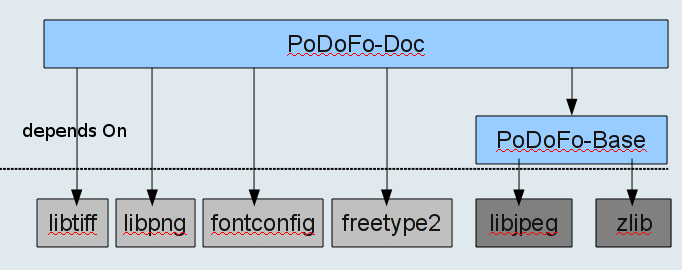

PoDoFo is a library to work with the PDF file format and includes also a few tools. The name comes from the first two letters of PDF (Portable Document Format).
The PoDoFo library is a free portable C++ library which includes classes to parse a PDF file and modify its contents into memory. The changes can be written back to disk easily. PoDoFo is designed to avoid loading large PDF objects into memory until they are required and can write large streams immediately to disk, so it is possible to manipulate quite large files with it. PoDoFo uses and relies on exceptions, so it must be built with them enabled.
Besides PDF parsing and writing PoDoFo includes also very simple classes to create your own PDF files. All classes are documented so it is easy to start writing your own application using PoDoFo.
PoDoFo is primarily useful for applications that wish to do lower level manipulation of PDF, such as extracting content or merging files. It's also useful if your application has specific requirements for it's PDF output that more general output-oriented libraries like Cairo cannot satisfy. Canvas/drawing support is currently very limited in PoDoFo, so for pure output tasks a library like Cairo will be more suitable. PoDoFo cannot render PDF, so you should look at a library like Poppler for that.
See:
The PoDoFo tools are simple tools build around the PoDoFo library. These tools are first of all examples on how to use the PoDoFo library in your own projects. But secondly they offer also features for working with PDF files. More tools will come with future release and the existing tools will gain more features. The following tools are currently available:
Additionally there is the external tool PoDoFoBrowser which is not included in this package, but can be downloaded from the PoDoFo webpage. PoDoFoBrowser is a Qt application for browsing and modifying the objects in a PDF file, examining the structure of PDF files, and manipulating PDF streams. It is very useful if you want to look on the internal structure of PDF files.
As of version 0.7 PoDoFo is available for Unix, Mac OS X and Windows platforms.
PoDoFo is available on the internet: podofo.sf.net
To build PoDoFo lib you need a working toolchain and a c++ compiler as well as the following libraries:
See Installation with CMake for a list of tested platforms and compilers. In general, any reasonably well behaved C++ compiler should work.
A list of known -dev / -devel packages required for various Linux distros is maintained in the required Linux packages appendix.
See also Using PoDoFo.
Rather than using binary packages, you should usually build PoDoFo yourself. This ensures that it will be built with the same compiler and settings as your program. Because most platforms have no consistent C++ ABI or runtime libraries, this is important to ensure that you get a compatible STL, correct memory management between podofo and your app, etc.
PoDoFo is built and installed using CMake. The autotools build, Visual Studio project and XCode project were dropped as maintaining three unrelated and incompatible build systems that are exclusive to three different platforms consumes a lot of resources which can be spend better on improving PoDoFo itself. Even if you've never used CMake before, you'll find it pretty easy.
Unix users should generate Unix Makefiles with CMake, though it's also possible to produce a KDevelop project. See CMake builds on Linux/UNIX
If your application or library uses Visual Studio, CMake can be used to build a Visual Studio project you can use. Alternately, if you are using MinGW for your existing code, CMake can make you a MinGW makefile to build a mingw compatible version of PoDoFo. You must build PoDoFo with the same compiler as your application. See CMake builds on Windows
Mac OS X users will need to use CMake to generate a conventional UNIX build with Makefiles, or may generate an XCode project with CMake. See the Mac OS X section below, and the generic instructions for cmake builds
Don't know what STLPort is? Ignore it and skip this section. Packagers should not enable STLPort.
If your project uses STLPort rather than your platform/toolset's native STL, you must configure PoDoFo to use STLPort as well. Use the -DUSE_STLPORT=1 argument to configure. Do not enable STLPort for podofo unless you use it in your project; you will get an incompatible C++ STL leading to link errors, runtime crashes, or other problems.
It is unnecessary and unwise to build PoDoFo against STLPort on any current major platform unless you have a specific reason to do so.
PoDoFo can make limited use of the Boost libraries if they are available. There is no need to use them, but some things may work more smoothly, and more use is expected in the future. If PoDoFo is built to use Boost, your application must also have Boost's headers (boost graph libraries) on its search path. Set -DWANT_BOOST:BOOL=1 to enable Boost support.
Packagers should not currently build PoDoFo with boost support.
PoDoFo has support for builds using CMake on all supported platforms. The CMake build has been tested on:
PoDoFo is also known to build with Visual C++ 6 using CMake, though it is not regularly tested by the team so you might need to do some work to use a recent svn build.
You can use the CMake variable CMAKE_BUILD_TYPE to control the type of
build. The main values supported are DEBUG and RELEASE. The default is
DEBUG. Set the build type with the CMake argument:
-DCMAKE_BUILD_TYPE=DEBUG
or
-DCMAKE_BUILD_TYPE=RELEASE
as appropriate.
You can control where the files are installed with `make install' with
-DCMAKE_INSTALL_PREFIX=/path/to/install/dir
All instructons below use out-of-tree builds (recommended). To clean up an out-of-tree build, just delete the build directory, as no files are touched within the source directory.
On all Makefile-style builds, set the VERBOSE flag to 1 on the make command
line to see all compiler commands etc, eg: make VERBOSE=1
Linux and UNIX users should be able to build PoDoFo by cd'ing into the PoDoFo checkout or unpacked tarball directory (here assumed to be named "podofo-src") then running the build commands shown below. The CMake command below will install into $HOME/podofo to avoid needing root priveleges for installation, but you can change the destination to wherever you want or remove the install prefix setting to use the default.
To build and install:
mkdir ../podofo-build cd ../podofo-build cmake -G "Unix Makefiles" -DCMAKE_INSTALL_PREFIX="$HOME/podofo" ../podofo-src make make install
To see detailed compiler output, use:
make VERBOSE=1
If you're working on a 64 bit linux that has a /usr/lib64 directory, add
-DWANT_LIB64:BOOL=TRUE to the CMake command line.
If you need to specify additional paths to search for libraries, set the
CMAKE_INCLUDE_PATH and CMAKE_LIBRARY_PATH environment variables or set them on
the command line:
cmake -G "Unix Makefiles" ../podofo-src \ -DCMAKE_INCLUDE_PATH=/usr/sfw/include \ -DCMAKE_LIBRARY_PATH=/usr/sfw/lib
If you wish to generate only a static library or only a shared library, set the
PODOFO_BUILD_SHARED and/or PODOFO_BUILD_STATIC flags:
cmake -G "Unix Makefiles" ../podofo-src \ -DCMAKE_INCLUDE_PATH=/usr/sfw/include \ -DCMAKE_LIBRARY_PATH=/usr/sfw/lib \ -DPODOFO_BUILD_SHARED:BOOL=TRUE \ -DPODOFO_BUILD_STATIC:BOOL=FALSE
By default, with CMake 2.6.x all supported library types will be built where
possible. Only the shared library will be built by default using 2.4.x because
of a CMake limitation; you can build a static library instead with
-DPODOFO_BUILD_STATIC:BOOL=TRUE, or upgrade to CMake 2.6.x .
Note that the instructions above run an out-of-tree build. CMake does support in-tree builds, but the use of out-of-tree builds is very strongly recommended.
If your system has gcc 4, PoDoFo will tell gcc to make symbols hidden by
default using the -fvisibility=hidden flag to gcc. Only symbols explicitly
exported by PoDoFo will be exported. You can explicitly enable or disable this
behaviour with the boolean flag:
-DPODOFO_USE_VISIBILITY=1 (or 0 for off).
Enabling default hidden visibility reduces the PoDoFo binary size dramatically
and improves link times. It also helps prevent accidental use of symbols that
are not part of PoDoFo's public API. PoDoFo developers will also find this
useful, as it will cause some mistakes to be reported as link errors that would
otherwise go undetected and break the win32 builds.
Mac OS X users can build PoDoFo using CMake either by generating conventional UNIX Makefiles (the "Unix Makefiles" CMake target) or generating an XCode project (the "Xcode" target). In either case the following applies.
You will need freetype and fontconfig. It's possible to omit the use of
libjpeg (see the platform-independent documentation) but by default libjpeg
will also be required. If you have these libraries already (say, from fink
or DarwinPorts) you can skip the following section and update the
CMAKE_INCLUDE_PATH and CMAKE_LIBRARY_PATH arguments appropriately.
I'll assume you're installing podofo and any required libraries into $HOME/libs . Adjust to taste, but keep it consistent.
The easiest way to get any required libraries is to use MacPorts to install the libjpeg, fontconfig, and freetype libraries. Once you've installed MacPorts, just run:
/opt/local/bin/port install fontconfig freetype jpeg tiff lua
MacPorts will automatically build the libraries and their dependencies, installing them in /opt/local.
If you want to distribute the libraries with your application, all you'll need to do is use install_name_tool to set appropriate relative paths for their linkage and include them in your application bundle - just like you do with any other libraries.
You should be able to configure and install podofo on Mac OS X using:
cmake -G "Unix Makefiles" \ -DWANT_FONTCONFIG:BOOL=TRUE \ -DCMAKE_INSTALL_PREFIX=/opt/podofo \ -DCMAKE_INCLUDE_PATH=/opt/local/include \ -DCMAKE_LIBRARY_PATH=/opt/local/lib \ ../podofo make sudo mkdir /opt/podofo sudo chown $USER /opt/podofo make install
change "Unix Makefiles" to "Xcode" if you want to build an XCode project instead, then instead of running `make' and `make install' just open the project file and work as normal
For Homebrew (package manager for Mac OS X) it is quite simple to install podofo. Freetype2 and zlib should be installed on Mac OS X by default.
brew install fontconfig brew install libjpeg brew install libtiff cd ((directory of podofo)) cmake -G "Unix Makefiles" make make install
PoDoFo requires a couple of other open source libraries to work. At minimum it needs zlib and libjpeg. Additional functionality is enabled if libtiff and/or openssl are available.
Both MinGW and Visual Studio users should use the standard precompiled zlib dll from zlib.org. There is no need to compile your own.
Remember that you must ship zlib1.dll with your application. During testing it must be in the same directory as the PoDoFo-using executable or the directory containing it must be on your system PATH.
MinGW users can download the latest libjpeg installer from GnuWin32
.For Visual Studio you will need to build libjpeg with your version of Visual Studio. Download the libjpeg sources from http://www.ijg.org/ and unpack them into a working directory. I'll assume you've used C:\Developer\jpeg. Once the sources are unpacked, start a visual studio command prompt and cd into c:\developer\jpeg then run copy jconfig.vc jconfig.h then nmake /f makefile.vc /a
If you use a DLL build of libjpeg remember that you must ship the DLL with your application. During testing the libjpeg dll must be in the same directory as the PoDoFo-using executable or the directory containing it must be on your system PATH. These requirements do not apply to the (recommended) static library libjpeg.
Building PoDoFo on Windows can be done using MinGW (a minimalist gcc-based compliler environment for Windows) or Visual Studio. Other methods may work but have not been tested.
CMake 2.6.x is required for Windows. You can download it from cmake.org
.Because the C++ ABIs of most of the win32 compilers are incompatible, you must build PoDoFo with the same compiler and version that you will use to build the programs linked to PoDoFo. Failure to follow this restriction will result in link errors at best, and bizarre runtime failures at worst.
On Windows, if you are linking against a shared (DLL) build of PoDoFo you
MUST define the preprocessor macro USING_SHARED_PODOFO when
including any podofo headers. Failure to do so will result in link time and/or
runtime errors. Similarly, defining it when linking with a static PoDoFo can
cause problems.
On Windows, PoDoFo may be built as either a shared or static library. Building both is not supported. By default only the shared library will be built. If you want a static library, just disable generation of the shared library with the extra argument to cmake:
-DPODOFO_BUILD_SHARED=FALSE
PoDoFo will generally work correctly if you download pre-built libraries, such as those published by the GnuWin32 project, even if they were built with a different compiler. The primary exception is freetype, which should if at all possible be built using your compiler. Freetype provides a VC++ project file and is very easy to build. Make sure to build both the debug multi-threaded and release multi-threaded versions.
For release you should generally build your own copy of these libraries
unless there is a well known and high quality pre-built version, like there is
for zlib. If you have built your own libjpeg you can improve PoDoFo's use of
it a bit by passing -DJPEG_COMPATIBLE_RUNTIME to CMake to tell
PoDoFo it's safe not to use its' workarounds for incompatible runtimes.
Especially on Windows it is also common for custom built libraries to have different names to those you might download as pre-built copies. CMake won't be able to find them if they're called something else unless you tell it. Use these variables to tell CMake what names to look for a library under:
For example, a cmake command line might include -DFREETYPE_LIBRARY_NAMES_DEBUG=freetype239MT_D -DFREETYPE_LIBRARY_NAMES_RELEASE=freetype239MT . If you only have the release library, just use -DFREETYPE_LIBRARY_NAMES . Telling CMake which are debug and release libraries helps it ensure you link to the right libraries depending on build type, but that does no good if you don't have a debug library.
To build PoDoFo with MinGW, you'll naturally need MinGW. The author recommends installing Qt 4 from Trolltech, which has a well packaged version of MinGW and is also useful for some PoDoFo tools like PoDoFoBrowser.
Once MinGW is set up, make sure that the MinGW "bin" directory is on your PATH, and be sure to set
CMAKE_INCLUDE_PATH and CMAKE_LIBRARY_PATH such that
CMake can find the headers and .lib files for the libraries PoDoFo requires.
The GnuWin32 library packages from http://gnuwin32.sf.net/ are known to
work with PoDoFo, so installing zlib, freetype, and libjpeg from there should do the trick.
To configure and build PoDoFo with a default GnuWin32 install and with MinGW already on your PATH:
md ..\podofo-debug cd ..\podofo-debug cmake -G "MinGW Makefiles" ..\podofo-src -DCMAKE_INCLUDE_PATH=c:\progra~1\gnuwin32\include -DCMAKE_LIBRARY_PATH=c:\progra~1\gnuwin32\lib -DPODOFO_BUILD_SHARED:BOOL=FALSE mingw32-make
It is extremely strongly recommended that you build PoDoFo only as a static
library if you are using MinGW by setting the
-DPODOFO_BUILD_SHARED:BOOL=FALSE flag to cmake. libstdc++ on MinGW
at the time of writing was not a shared library, causing serious issues with
memory allocation and deallocation when C++ objects like
std::string are passed by value across DLL boundaries or are
otherwise deleted in a different DLL to where they were allocated. Of course,
this will cause you problems if you intend to use PoDoFo across DLL boundaries,
but until libstd++ is made shared on MinGW there's not much to be done. VC++
does not suffer from this issue.
A Visual Studio build requires that Microsoft Visual Studio be installed. Visual Studio 9 2008 Express Edition is known to work, and is a free download from Microsoft. You should get zlib from zlib.org. If you want JPEG support, build your own libjpeg from sources or use the version from GnuWin32 (which will work OK, if a bit slower, despite being built with gcc). It is preferable to build your own copies of freetype, libjpeg and libtiff with your own compiler and bundle those copies.
You'll also need CMake 2.6.
If you're using Visual Studio you really should build your own freetype.
With recent VC++ versions the GnuWin32 version of freetype is unlikely to work
reliably. Download the sources from http://download.savannah.gnu.org/releases/freetype/
- you want something like ft245.zip . Unpack them and open
builds\win32\visualc\freetype.sln in VC++, upgrading it if required. Build it
in both debug multithreaded and release multithreaded modes. You should now see some
.lib files in a subdirectory of the objs\win32\ directory. The following instructions will assume
they're named freetype239MT.lib and
freetype239MT_D.lib and are found in objs\win32\vc2008, so adjust if yours are different.
If you built a debug freetype, you will also need to copy vc90.pdb (assuming you're using VC++ 9, otherwise the name will vary) from objs\debug_mt\vc90.pdb to objs\win32\vc2008\ so that VC++ can find Freetype's debug info.
The visual studio build of PoDoFo has two stages - first, CMake is used to generate a
Visual Studio solution, then the solution is built in VC++. I prefer to create
a short build.cmd file for the CMake command since on Windows it
tends to get rather long. Here's an example that assumes the
build.cmd file is in an empty directory with
..\podofo-src being the relative path to the PoDoFo sources.
del cmakecache.txt set FTDIR=C:\developer\freetype-2.3.5 set FTLIBDIR=C:\developer\freetype-2.3.5\objs\win32\vc2008 set JPEGDIR=C:\Developer\jpeg set ZLIBDIR=C:\developer\zlib123-dll cmake -G "Visual Studio 9 2008" ..\podofo-src -DCMAKE_INCLUDE_PATH="%FTDIR%\include;%JPEGDIR%\include;%JPEGDIR%;%ZLIBDIR%\include" -DCMAKE_LIBRARY_PATH="%FTLIBDIR%;%FTDIR%\lib;%JPEGDIR%\lib;%JPEGDIR%;%ZLIBDIR%\lib" -DPODOFO_BUILD_SHARED:BOOL=FALSE -DFREETYPE_LIBRARY_NAMES_DEBUG=freetype239MT_D -DFREETYPE_LIBRARY_NAMES_RELEASE=freetype239MT
Run the saved build.cmd from a cmd.exe window. If all goes well, you can open and build the generated podofo.sln in Visual Studio and build it.
Note that CMake should automatically find your Visual Studio install, so you shouldn't need any special settings unless you have an unusual setup or more than copy of the same version of Visual Studio installed.
You can download the free Visual C++ Express Edition 9 from Microsoft.
PROBLEMS?If you have problems, try deleting your build directory then re-running the commands above after running:
set PATH=%SystemRoot%;%SystemRoot%\SYSTEM32
in the cmd.exe window you are using. If you do this you'll have
to copy jpeg62.dll, freetype6.dll, and
zlib.dll (names may vary; make sure they're the ones that match
the LIB files you linked to) to the same folder as the .exe you are trying to
run. This should resolve any issues caused by incompatible DLLs with the same
names being present earlier on your PATH - a rather common issue if you have
lots of open source software installed. Do this if you get unexplained crashes
or errors about missing/mismatched ordinals.
PoDoFo can also be built with NMake. The build procedure is essentially the same as described for MinGW or Visual Studio, but you must use the target name "NMake Makefiles" and run "nmake" after CMake completes. Remember to run everything from within a Visual Studio environment shell or to run vcvarsall.bat before running CMake.
With Visual C++ Express Edition 8, you must also separately run setenv.cmd from the Win32 SDK. This is not required for Express Edition 9.
A simple example that uses PoDoFo can be found in examples/helloworld . You
will also find the tests and tools shipped with PoDoFo informative when
learning to use the library. Reading the documentation on PdfMemDocument,
PdfStreamedDocument, PdfObject and PdfVariant may also be useful.
It is very important to understand that PoDoFo's 0.x's API is not stable from
release to release. As such, rather than relying on a particular version of
PoDoFo being shipped by the OS/distro that you are targeting, consider building
and linking to your own private copy of PoDoFo. (Win32 developers will do this
anyway). For example, between PoDoFo 0.5.0 and early PoDoFo 0.6.0svn, PdfDocument
changed from being a concrete class to an abstract parent of PdfMemDocument and
PdfStreamedDocument, thus breaking code that instantiates PdfDocument .
A good way to handle maintaining your own private copy if you use Subversion for your project is to use the svn:externals mechanism to automatically reference a specific revision of PoDoFo from podofo svn, or a particular tag . This permits you to control when you update to a new version and lets you make sure your code is updated for any API changes, without forcing users to go and find a specific version of PoDoFo. Alternately, you can just check the tree into your own revision control system and do periodic code drops. Have a look at PoDoFoBrowser for an example of the svn:externals approach.
If you statically link to podofo, that'll prevent any unexpected problems with linker paths. Another option on most platforms is to use rpath linking to ensure that a specific copy of the podofo library is preferred by the linker. CMake takes care of this automatically if you're using it for your project.
When PoDoFo reaches 1.x versions it is expected that API changes will be less frequent. At this point, though, they're an unavoidable part of improving and completing the library.
If you are using CMake in your project and you choose to bundle a copy of the PoDoFo sources, with svn:externals or otherwise, you can quite easily build a private copy of PoDoFo as part of your app's normal build process. Have a look at FindLIBPODOFO.cmake from PoDoFoBrowser to see how to do that, or just copy that file.
PoDoFo's headers are designed to avoid exposing its library dependencies, so you do not need the headers for Freetype etc on the include path. However, you MUST link your application to podofo's required libraries on most platforms, eg on UNIX:
-lpodofo -lfreetype -lfontconfig -ljpeg -lz
is generally appropriate. Win32 users must also ensure that they link to
gdi32 and ws_win32.
When working with PoDoFo it is important to remember that the library makes use of exceptions. Your code must be built with exception support and must be exception safe in areas that call PoDoFo. gcc users may not build with -fno-exceptions. If you have non-exception-safe code or code (such as pure C code) that cannot propagate exceptions your podofo-using code must catch all exceptions before they propagate to such unsafe sections. PoDoFo will throw a PdfError& for PoDoFo-specific exceptions. It may also propagate STL/runtime generated exceptions like std::bad_alloc, though it'll never throw them directly. PoDoFo cannot be built without exceptions.
More general information about exception handling is in the FAQ.
Several preprocessor defines are used inside PoDoFo. This section tries to document all of them. These defines are set automatically by the CMake build system, so usually you do not have to worry about them.
| Define | Meaning |
DEBUG |
Indicates a debug build of PoDoFo. |
PODOFO_EXTRA_CHECKS |
Should we do lots of extra (expensive) sanity checking? You should not define this on production builds because of the runtime cost and because it might cause the library to abort() if it notices something nasty. It may also change the size of some objects, and is thus not binary compatible. |
PODOFO_IS_LITTLE_ENDIAN |
This define is set on all little endian system and required on these systems for PoDoFo to work properly. |
PODOFO_IS_BIG_ENDIAN |
This define is set on all big endian system and required on these systems for PoDoFo to work properly. |
PODOFO_MULTI_THREAD |
Will compile PoDoFo with threading support, e.g. mutex that lock global variables. |
PODOFO_VERBOSE_DEBUG |
This will cause PoDoFo to write even more debug output to the commandline. |
HAVE_BOOST |
If defined PoDoFo is compiled with Boost support. |
PODOFO_HAVE_JPEG_LIB |
If defined PoDoFo will use libJpeg to read and decode JPEG images. |
PODOFO_HAVE_TIFF_LIB |
If defined PoDoFo will use libTiff to read and decode TIFF images. |
PODOFO_HAVE_LUA |
If defined PoDoFoImpose will be built with Lua support for plan files. |
PoDoFo is structured into two libraries podofo-base and podofo-doc, where most users want to use podofo-doc which includes all the PoDoFo features and dependends on the podofo-base library.
If you only need basic PDF editing features and are not afraid of working with the object in a PDF file directly (see PdfObject), podofo-base is the right choice for you. It has only a few dependencies (zlib and libjpeg for compression). Contrary, podofo-doc provides you with a much richer and easier to use interface, but has some more dependencies to handle fonts and images. The image below shows the dependencies of each of the two libraries.

If you have questions on PoDoFo or bug reports, feature requests you can email our mailinglist <podofo-users@lists.sf.net>. Sign up details are available on the podofo support page.
The library is licensed under the LGPL (i.e. you may even use the shared library in closed sourced applications). The tests and tools which are included in PoDoFo are licensed under the GPL. See the files COPYING and COPYING.LIB for details. More detailed explanations are in the FAQ on the website, but the licenses have the final say.
Linux distros love to name their packages in various weird ways. Here are commands to install the required -dev or -devel packages for PoDoFo for various distros. Please send additions for reasonably recent distros to the PoDoFo mailing list.